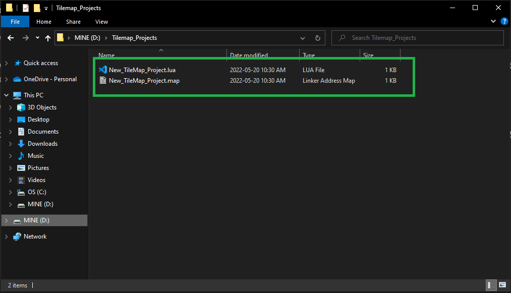

Saving Your Projects
To save your project, go to the File menu and select either Save or Save As...:

If you have not yet saved your project, a file dialog will open allowing you to choose the location that you want your project to be in. By default, the project is saved as a .lua file.

After saving there should be two files generated automatically for you (three if colliders are created!):

The .lua file is your project file. The project file contains a list of the assets, filepaths, and map paths to be used when loading a project and generating a tilemap.
 Example of a saved project lua file!
Example of a saved project lua file!
As you can see from the example above, the lua file holds the specific paths of the assets and the maps; therefore, if you move the files to a different drive or location, you must update the path before you can properly load the project again. To change the path, simply open the .lua file in any text editor and change it to the new desired path.